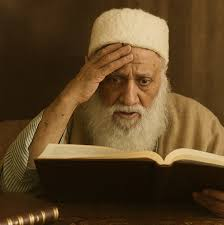
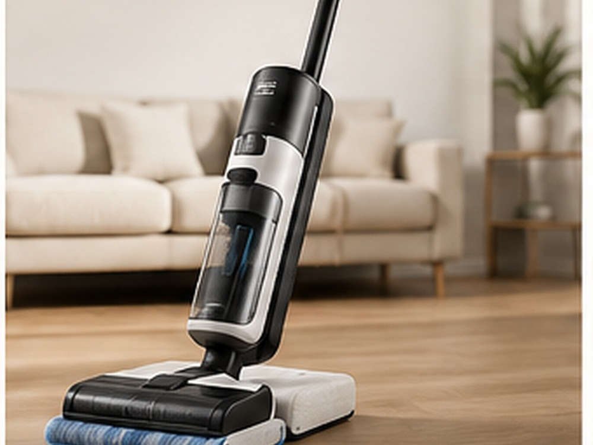

אות בספר תורה
שותפות אישית בכתיבת אות מספר התורה — זכות קטנה בגודל, גדולה במשמעות.
סכום התרומה לבחירתכםלזכר קדושי חרבות ברזל
כתיבת ספר תורה לזכר מרנן המקובלים רבי יהודה פתאיה זי״ע, הבבא סאלי זי״ע, רבי עובדיה יוסף זי״ע, ולזכרם של קדושי מלחמת חרבות ברזל.

אנו מזמינים את הציבור להיות שותף בכתיבת ספר תורה לעילוי נשמת הצדיקים ולזכר קדושי מלחמת חרבות ברזל. כל תרומה מצטרפת לזכות גדולה, מחזקת את השלמת הספר, ומעניקה לתורמים שותפות במצווה לדורות.
כל אחד יכול להיות שותף בכתיבת ספר התורה — באות, במילה, בפסוק, בפרשה או בשותפות מכובדת לפי יכולתו.
שותפות אישית בכתיבת אות מספר התורה — זכות קטנה בגודל, גדולה במשמעות.
סכום התרומה לבחירתכםשותפות במילה קדושה מתוך ספר התורה, לזכותכם ולזכות בני משפחתכם.
סכום התרומה לבחירתכםבחירת שותפות משמעותית בפסוק מספר התורה, לעילוי נשמה, לרפואה או להצלחה.
סכום התרומה לבחירתכםשותפות מכובדת בפרשה מספר התורה, זכות הנשארת לדורות.
סכום התרומה לבחירתכםתרומה משמעותית להשלמת כתיבת ספר התורה והכנסתו בקדושה ובשמחה.
סכום התרומה לבחירתכםכל תרומה מצטרפת לזכות הגדולה ומקרבת את השלמת ספר התורה.
סכום התרומה לבחירתכםהטבה מיוחדת לתורמים
מעבר לזכות הגדולה בכתיבת ספר התורה, תורמים בסכומים הבאים נכנסים להגרלות מיוחדות.
השתתפות בהגרלה על
תורמים מעל 2,000 ₪ נכנסים להגרלה על רכב חדש.
בשווי 50,000 ₪אחת מאפשרויות הזכייה
תורמים מעל 1,000 ₪ נכנסים להגרלה על מוצר יקר ערך לבחירה.

אחת מאפשרויות הזכייה
תורמים מעל 1,000 ₪ נכנסים להגרלה על מוצר יקר ערך לבחירה.
אחת מאפשרויות הזכייה
תורמים מעל 1,000 ₪ נכנסים להגרלה על מוצר יקר ערך לבחירה.
בוחרים האם להשתתף באות, מילה, פסוק, פרשה או סכום אחר.
מקדישים את התרומה לעילוי נשמה, לרפואה, להצלחה או לזכות בני המשפחה.
לוחצים על כפתור התרומה ועוברים לעמוד המאובטח להשלמת התרומה.
רכישת אות בספר תורה היא שותפות במצווה גדולה, המחברת בין זכות רוחנית, זיכרון נצחי וחיזוק כלל ישראל.
ידועה מעלת ההשתתפות בכתיבת ספר תורה כסגולה לרפואה, לשמירה ולהסרת קטרוגים ועין הרע.
חכמינו מלמדים על מעלת הקונה חלק בספר תורה כסגולה לברכה, הצלחה ושמירת הנכסים.
שותפות במצווה גדולה מחברת את האדם לשורש של ברכה, שותפות טובה וישועה קרובה.
כתיבת ספר תורה מחזקת את הקשר לתורה, לחכמה, להמשכיות ולבניין הדורות הבאים.
הקדשה בספר תורה היא זכות גדולה לעילוי נשמה, וגורמת נחת רוח לנפטרים בעולם האמת.
מצוות כתיבת ספר תורה מאחדת את כלל ישראל סביב התורה, הזיכרון והשותפות בקדושה.
ספר תורה נכתב פעם אחת, אך הזכות שבו נמשכת בכל קריאה, בכל שבת ובכל חג.
השותפות בספר התורה מוקדשת לעילוי נשמת מרנן המקובלים והצדיקים, שזכותם תגן עלינו.
כתיבת הספר נעשית גם לזכרם של הקדושים שנפלו ונרצחו, ולכבוד זכרם הטהור.
תרומה מאובטחת להשלמת ספר התורה
בלחיצה על הכפתור תעברו לעמוד התרומה המאובטח, שם תוכלו לבחור סכום ולהקדיש את התרומה לזכות יקיריכם.
מעבר לתרומה מאובטחת